Подборку собрали 18 ноября, прошедшие события скрыты. Свежая афиша — на главной
Выходные 21–22 ноября
Чем заняться в выходные в Москве
На выходных, 21–22 ноября, в нашей афише 47 событий, среди них 16 выставок, 13 спектаклей и 8 концертов. А если хочется просто выбраться из дома, у нас 231 план на день: парк, усадьба или музей, а потом обед или кофе рядом.
- 47 событий
- 231 план
Афиша на 21–22 ноября 40 из 47
Музей «Гараж», −1 этаж · м. Октябрьская · бесплатно · 12+
Инсталляция-диалог: две лампы общаются вспышками и звуком, а розовая зеркальная комната множит тебя до бесконечности. Вход бесплатный, фото выходят эффектные.
Подробнее: Вадим Фишкин «Словарь воображаемых мест»Позвать сюда: Вадим Фишкин «Словарь воображаемых мест»Билеты : Вадим Фишкин «Словарь воображаемых мест» (страница с билетами, откроется в новой вкладке)
Фото: Garage Museum of Contemporary Art, CC BY-SA 4.0 · Wikimedia Commons
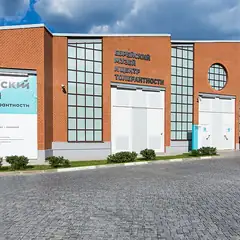
Еврейский музей · м. Марьина Роща
Выставка о том, как люди передавали новости — от каменных табличек до цифры; среди авторов Шагал и Родченко. Прямо из зала можно отправить открытку.
Подробнее: Весть 2.0Позвать сюда: Весть 2.0Билеты : Весть 2.0 (страница с билетами, откроется в новой вкладке)
Фото: Jewish Museum and Tolerance Center, CC SA 1.0 · Wikimedia Commons
Музей «Гараж», мезонин · м. Октябрьская · бесплатно · 12+
Можно поиграть в искусство: две 8-битные игры-инсталляции индийской художницы по мотивам советских детских книг. Бесплатно, а рядом Парк Горького.
Подробнее: Видеоигры Афры ШафикПозвать сюда: Видеоигры Афры ШафикБилеты : Видеоигры Афры Шафик (страница с билетами, откроется в новой вкладке)
Фото: Garage Museum of Contemporary Art, CC BY-SA 4.0 · Wikimedia Commons
Музей русского импрессионизма · м. Белорусская
Небольшая выставка о хранителе, возродившем Петергоф: Бенуа, Серебрякова, Кустодиев из фондов заповедника. После можно зайти в кафе и книжный.
Подробнее: Время музейных поэтов. Вадим Знаменов и его ПетергофПозвать сюда: Время музейных поэтов. Вадим Знаменов и его ПетергофБилеты : Время музейных поэтов. Вадим Знаменов и его Петергоф (страница с билетами, откроется в новой вкладке)
Фото: Sergey A. Demidov, CC BY 4.0 · Wikimedia Commons
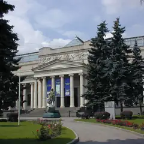
ГМИИ им. А. С. Пушкина, Галерея искусства стран Европы и Америки, зал 16 · м. Кропоткинская
Камерная выставка о французском коллекционере Гюставе Файе, поклоннике Гогена, и его связях с русскими собирателями. Один зал — на час; по понедельникам закрыто.
Подробнее: Гюстав Файе и русские коллекционерыПозвать сюда: Гюстав Файе и русские коллекционерыБилеты : Гюстав Файе и русские коллекционеры (страница с билетами, откроется в новой вкладке)
Фото: Ghirlandajo, CC BY-SA 3.0 · Wikimedia Commons
Манеж · м. Охотный ряд · 680–1 300 ₽ · 0+
Больше 400 снимков дикой природы со всего мира, зал о природе Москвы и макрозона с грибами. Неспешная красивая прогулка в центре, ежедневно 10–21.
Подробнее: Золотая Черепаха. XX Международный фестиваль дикой природыПозвать сюда: Золотая Черепаха. XX Международный фестиваль дикой природыБилеты : Золотая Черепаха. XX Международный фестиваль дикой природы (страница с билетами, откроется в новой вкладке)
Фото: Сергей Секачёв, CC BY-SA 3.0 · Wikimedia Commons
Музей «Гараж», открытое хранение · м. Октябрьская · 12+
Позднесоветские «долгие 80-е»: искусство вместе с телевизором, кино и рок-клубами той поры. Ностальгия для компании; учти, что в залах бывает мигающий свет.
Подробнее: Искусство на частоте 1980-хПозвать сюда: Искусство на частоте 1980-хБилеты : Искусство на частоте 1980-х (страница с билетами, откроется в новой вкладке)
Фото: Garage Museum of Contemporary Art, CC BY-SA 4.0 · Wikimedia Commons
ВДНХ, павильон № 1 «Центральный» · м. ВДНХ · 0+
Около 200 работ о том, как театр и живопись говорят одним языком: Репин, Брюллов, Суриков, Кустодиев и сценические костюмы. Центральный павильон ВДНХ.
Подробнее: Искусство сцены. Академическая живописьПозвать сюда: Искусство сцены. Академическая живописьБилеты : Искусство сцены. Академическая живопись (страница с билетами, откроется в новой вкладке)
Фото: Alexxx1979, CC BY-SA 4.0 · Wikimedia Commons
ГМИИ им. А. С. Пушкина, Галерея искусства стран Европы и Америки · м. Кропоткинская
Кубинские киноафиши и плакаты 1950–70-х — больше 140 листов дерзкой графики. Зайдёт и тем, кто к музеям обычно равнодушен. По понедельникам закрыто.
Подробнее: Кубинский плакат. 1950–1970-е. Кино и революцияПозвать сюда: Кубинский плакат. 1950–1970-е. Кино и революцияБилеты : Кубинский плакат. 1950–1970-е. Кино и революция (страница с билетами, откроется в новой вкладке)
Фото: Ghirlandajo, CC BY-SA 3.0 · Wikimedia Commons
ГЭС-2, галереи С2–С5 · м. Кропоткинская · 12+
Натюрморт, портрет и пейзаж глазами современных художников — сотня работ, десятки авторов. Бесплатный вход — каждую первую среду месяца.
Подробнее: Натюрморт. Портрет. Пейзаж. После жанраПозвать сюда: Натюрморт. Портрет. Пейзаж. После жанраБилеты : Натюрморт. Портрет. Пейзаж. После жанра (страница с билетами, откроется в новой вкладке)
Фото: Юрий Д.К., CC BY 4.0 · Wikimedia Commons
Музей Востока на ВДНХ (павильон № 13) · м. ВДНХ · 0+
Около 250 работ Рериха — от древнерусских мотивов до гималайской серии — плюс тибетские танки и буддийская бронза. Большая выставка в павильоне ВДНХ.
Подробнее: Николай Рерих. Ковчег будущегоПозвать сюда: Николай Рерих. Ковчег будущегоБилеты : Николай Рерих. Ковчег будущего (страница с билетами, откроется в новой вкладке)
Фото: Alexxx1979, CC BY-SA 4.0 · Wikimedia Commons
ЦСИ AZ/ART · м. Китай-город · 0+
Скульптура оттепели в 43 работах: Эрнст Неизвестный, группа ЛЕСС и их современники — и бунтари, и официальные мастера. Небольшая выставка на Маросейке.
Подробнее: Они были разными. Скульптура оттепелиПозвать сюда: Они были разными. Скульптура оттепелиБилеты : Они были разными. Скульптура оттепели (страница с билетами, откроется в новой вкладке)
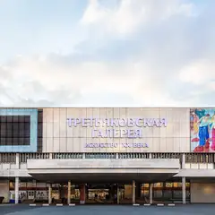
Новая Третьяковка · м. Октябрьская
Около 130 снимков трёх десятков авторов от конца XIX века до сегодня: как фотография ушла от подражания живописи к собственному языку.
Подробнее: Природа фотографииПозвать сюда: Природа фотографииБилеты : Природа фотографии (страница с билетами, откроется в новой вкладке)
Фото: Tretyakovgallery, CC BY-SA 4.0 · Wikimedia Commons
Центр «Марс» · м. Сухаревская · 0+
Пять залов-стихий — Огонь, Вода, Воздух, Земля и Эфир, — где ты сам часть работы, а нейроинтерфейс превращает концентрацию в рисунок. Есть вспышки и громкий звук.
Подробнее: Сенс. Эволюция стихийПозвать сюда: Сенс. Эволюция стихийБилеты : Сенс. Эволюция стихий (страница с билетами, откроется в новой вкладке)
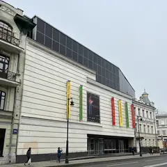
Мультимедиа Арт Музей (МАММ) · м. Кропоткинская · от 100 ₽ · 16+
Фотобиеннале занимает весь МАММ: Роджер Баллен, коллажи Родченко, история метро и многое другое. Билет от 100 ₽, по понедельникам закрыто.
Подробнее: Фотобиеннале-2026Позвать сюда: Фотобиеннале-2026Билеты : Фотобиеннале-2026 (страница с билетами, откроется в новой вкладке)
Фото: JukoFF, CC BY-SA 4.0 · Wikimedia Commons
Центр «Зотов» · м. Улица 1905 года · 6+
Выставка о хлебе и эпохе 1917–1939 годов: Кустодиев, Петров-Водкин, Родченко и залы, где пахнет выпечкой. Детям до 13 лет включительно — бесплатно. В понедельник закрыто.
Подробнее: ХлебПозвать сюда: ХлебБилеты : Хлеб (страница с билетами, откроется в новой вкладке)
Фото: MBH, CC BY 4.0 · Wikimedia Commons
МХТ имени Чехова · м. Охотный ряд · 16+
Булгаков о Мольере: великий актёр, король и цена милости власти. Постановка Юрия Квятковского с Константином Хабенским, три часа с антрактом.
Подробнее: Кабала святошПозвать сюда: Кабала святошБилеты : Кабала святош (страница с билетами, откроется в новой вкладке)
Фото: A.Savin, Free Art License · Wikimedia Commons
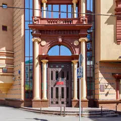
Театр Et Cetera · м. Тургеневская · 18+
Важди Муавад сам поставил свою знаменитую пьесу: брат и сестра распутывают прошлое матери. Сильная трагедия на 3 ч 15 мин с антрактом.
Подробнее: ПожарыПозвать сюда: ПожарыБилеты : Пожары (страница с билетами, откроется в новой вкладке)
Фото: Mike1979 Russia, CC BY-SA 3.0 · Wikimedia Commons
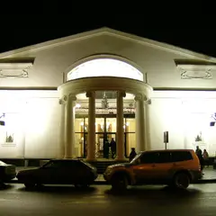
Театр «Современник» · м. Чистые пруды · 16+
Спектакль Галины Волчек по Ремарку идёт в «Современнике» десятилетиями: три друга, одна любовь и время между войнами. Сильная классика для двоих или компании.
Подробнее: Три товарищаПозвать сюда: Три товарищаБилеты : Три товарища (страница с билетами, откроется в новой вкладке)
Фото: Джус, CC BY 3.0 · Wikimedia Commons
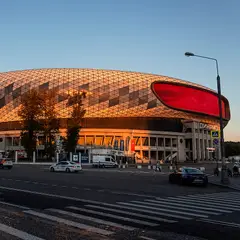
ВТБ Арена · м. Динамо · от 4 000 ₽ · 6+
Вечер к 40-летию Свердловского рок-клуба — колыбели «Наутилуса», «Чайфа» и «Агаты Кристи». Состав участников уточняй на сайте арены.
Подробнее: Юбилей свердловского рок-клубаПозвать сюда: Юбилей свердловского рок-клубаБилеты : Юбилей свердловского рок-клуба (страница с билетами, откроется в новой вкладке)
Фото: Domovou, CC BY-SA 4.0 · Wikimedia Commons
Театр на Мельникова · м. Дубровка · от 700 ₽ · 12+
Комедийный мюзикл о девяностых: скромный бухгалтер, строгая начальница и роман, которого нет в должностной инструкции.
Подробнее: Бухгалтер, мой бухгалтерПозвать сюда: Бухгалтер, мой бухгалтерБилеты : Бухгалтер, мой бухгалтер (страница с билетами, откроется в новой вкладке)
ВЭБ Арена · м. ЦСКА
Матч РПЛ на «ВЭБ Арене»: ЦСКА — «Ахмат». Не дерби, поэтому с билетами обычно проще — удобно собраться компанией и поболеть.
Подробнее: ЦСКА — АхматПозвать сюда: ЦСКА — АхматБилеты : ЦСКА — Ахмат (страница с билетами, откроется в новой вкладке)
Фото: mos.ru, CC BY 4.0 · Wikimedia Commons
Atmosphere · м. Москва-Сити · 2 000–10 000 ₽ · 0+
Легендарные «Браво» с большим концертом: «Этот город», «Любите, девушки» и твистовый рок-н-ролл, под который хочется танцевать.
Подробнее: БравоПозвать сюда: БравоБилеты : Браво (страница с билетами, откроется в новой вкладке)
Стендап клуб на Трубной, Большой зал · м. Трубная · от 1 200 ₽ · 18+
Ночной формат для тех, кто не обижается: ведущий и четыре комика без цензуры и запретных тем. Идёт по пятницам и субботам в 23:00.
Подробнее: Жёсткий стендапПозвать сюда: Жёсткий стендапБилеты : Жёсткий стендап (страница с билетами, откроется в новой вкладке)
STILL, Большой зал · м. Чистые пруды · от 2 500 ₽ · 18+
Формат без ведущего: на сцену по очереди выходят пять хедлайнеров, и лайнап каждый раз другой. Сеансы в 16:00, 19:00 или 21:30 — смотри по дате.
Подробнее: 5 хедлайнеров за 2500₽Позвать сюда: 5 хедлайнеров за 2500₽Билеты : 5 хедлайнеров за 2500₽ (страница с билетами, откроется в новой вкладке)
Гастротеатр «Калейдоскоп» · м. Охотный ряд · 18 000–25 000 ₽ · 12+
Гастрошоу у Манежной: два часа путешествия от пирамид Гизы до садов Семирамиды, к каждому чуду — свой сет. Вариант для особого свидания.
Подробнее: 7 чудес светаПозвать сюда: 7 чудес светаБилеты : 7 чудес света (страница с билетами, откроется в новой вкладке)
Фото: A.Savin, CC BY-SA 3.0 · Wikimedia Commons
Московский театр оперетты · м. Театральная · от 1 000 ₽
Мюзикл по Толстому: живой оркестр, роскошные костюмы и фигуристы на коньках прямо на сцене. Показы блоками: в октябре, ноябре и перед Новым годом.
Подробнее: Анна КаренинаПозвать сюда: Анна КаренинаБилеты : Анна Каренина (страница с билетами, откроется в новой вкладке)
Фото: Vladimir OKC, CC BY-SA 3.0 · Wikimedia Commons
SVET · м. Китай-город · от 25 000 ₽ · 6+
Ужин-спектакль режиссёра Алексея Франдетти и шефа Станислава Песоцкого: семь подач, живой вокал и проекции на 360°. Дорогой, но памятный вечер.
Подробнее: Атлантида. Тайна шести мировПозвать сюда: Атлантида. Тайна шести мировБилеты : Атлантида. Тайна шести миров (страница с билетами, откроется в новой вкладке)
Фото здания: Роман Балабин, CC BY-SA 3.0 · Wikimedia Commons
Стендап клуб на Трубной, Большой зал · м. Трубная · 950–1 500 ₽ · 18+
Фирменный вечер клуба: опытные комики с обкатанным материалом. Показы почти каждый день, по пятницам и субботам — в 19:00 и 21:00.
Подробнее: Биг стендапПозвать сюда: Биг стендапБилеты : Биг стендап (страница с билетами, откроется в новой вкладке)
Театр эстрады · м. Кропоткинская · 1 800–20 000 ₽ · 16+
Мюзикл Михаила Миронова на песнях Александра Розенбаума — история длиною в жизнь. Играют почти каждый день до 29 ноября, в выходные дважды.
Подробнее: Вальс-бостонПозвать сюда: Вальс-бостонБилеты : Вальс-бостон (страница с билетами, откроется в новой вкладке)
Фото: ATI1999, CC BY-SA 4.0 · Wikimedia Commons
МДМ (Московский дворец молодёжи), Большой зал · м. Фрунзенская · от 1 100 ₽ · 12+
Музыкальная комедия на хитах Челентано и итальянской эстрады — лёгкая, как старые кинокомедии. По выходным есть дневные показы.
Подробнее: Всё будет Челентано!Позвать сюда: Всё будет Челентано!Билеты : Всё будет Челентано! (страница с билетами, откроется в новой вкладке)
Музей Николая Островского, концертный зал · м. Пушкинская · от 1 100 ₽ · 6+
Квартет «Каприччио» играет «Времена года» Вивальди целиком, при свечах, в небольшом зале на Тверской. Несколько дат на выбор.
Подробнее: Концерт при свечах. Времена года. ВивальдиПозвать сюда: Концерт при свечах. Времена года. ВивальдиБилеты : Концерт при свечах. Времена года. Вивальди (страница с билетами, откроется в новой вкладке)
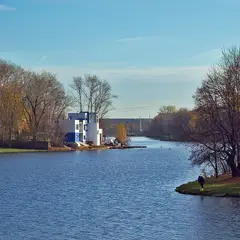
Усадьба Деда Мороза в Кузьминках · м. Кузьминки
Два дня зимнего фестиваля в усадьбе Деда Мороза: гости из разных регионов показывают свои новогодние традиции. Повод для прогулки по парку вдвоём или компанией.
Подробнее: Московский Мороз-фестПозвать сюда: Московский Мороз-фестБилеты : Московский Мороз-фест (страница с билетами, откроется в новой вкладке)
Фото: NVO, CC BY-SA 3.0 · Wikimedia Commons
Иммерсивный театр «Морфеус» · м. Павелецкая · 3 900–4 900 ₽ · 16+
Иммерсивная комедия с закрытыми глазами: семь зрителей попадают в Москву 1903 года с театральными интригами и кафе. Полтора часа, несколько сеансов в день.
Подробнее: Поезд, Чехов, два орлаПозвать сюда: Поезд, Чехов, два орлаБилеты : Поезд, Чехов, два орла (страница с билетами, откроется в новой вкладке)
Театр на Цветном · м. Трубная · 1 500–7 700 ₽ · 12+
Продолжение комедии «Мамма мимо!»: провинциальной труппе дают сутки на авангардного «Призрака оперы». Пародии на хиты и много смеха.
Подробнее: Призрак мюзикла, или Что опять не так?Позвать сюда: Призрак мюзикла, или Что опять не так?Билеты : Призрак мюзикла, или Что опять не так? (страница с билетами, откроется в новой вкладке)
STILL, Большой зал · м. Чистые пруды · от 1 080 ₽ · 18+
Вечер в двух актах: сначала живой джаз, затем стендап от трёх комиков, каждый раз в новом составе. В пятницу начинают в 21:30, в другие дни — в 18:30.
Подробнее: Стендап + джаз: два концерта в один вечерПозвать сюда: Стендап + джаз: два концерта в один вечерБилеты : Стендап + джаз: два концерта в один вечер (страница с билетами, откроется в новой вкладке)
StandUp Cafe, Большой зал · м. Чистые пруды · от 1 190 ₽ · 18+
Свечи, комики и виолончели: между выступлениями звучат AC/DC, Nirvana и Muse в струнной версии. Около полутора часов; по воскресеньям начало в 16:30.
Подробнее: Стендап при свечах + Мировые рок-хиты на виолончелиПозвать сюда: Стендап при свечах + Мировые рок-хиты на виолончелиБилеты : Стендап при свечах + Мировые рок-хиты на виолончели (страница с билетами, откроется в новой вкладке)
ВТБ Арена · м. Динамо
Встреча сильных команд: «Динамо» — «Краснодар» на «ВТБ Арене». Ждём острую игру — отличный повод выбраться на стадион компанией.
Подробнее: Динамо — КраснодарПозвать сюда: Динамо — КраснодарБилеты : Динамо — Краснодар (страница с билетами, откроется в новой вкладке)
Фото: Domovou, CC BY-SA 4.0 · Wikimedia Commons
Эльдар · м. Новаторская
Оркестр играет Вивальди и другую классику при свечах, а художник тут же рисует картины на воде, которые выводят на экран.
Подробнее: Вивальди. Времена годаПозвать сюда: Вивальди. Времена годаБилеты : Вивальди. Времена года (страница с билетами, откроется в новой вкладке)
ВТБ Арена · м. Динамо · 1 290–6 990 ₽ · 0+
Хоккейное дерби «Динамо» — ЦСКА в воскресенье. Начало в 17:00, так что после матча останется время на ужин.
Подробнее: Динамо М — ЦСКА (хоккей, КХЛ)Позвать сюда: Динамо М — ЦСКА (хоккей, КХЛ)Билеты : Динамо М — ЦСКА (хоккей, КХЛ) (страница с билетами, откроется в новой вкладке)
Фото: Domovou, CC BY-SA 4.0 · Wikimedia Commons


Планы на день 24 из 231
- Дом Пороховщикова · Деревянный терем · м. Арбатская
- 7 минут пешкомДом Мельникова · Архитектура
- 9 минут пешкомA-House Cafe · Кафе
Бревенчатый терем среди каменных домов, цилиндры Мельникова с ромбами окон и кофе на Афанасьевском — тихая сторона центра.
Открыть план: Арбатские переулки без АрбатаПозвать сюда: Арбатские переулки без Арбата
Фото: Lite, CC BY-SA 3.0 · Wikimedia Commons
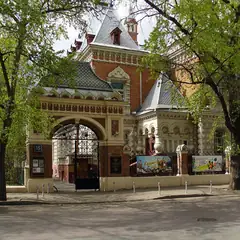
- Биологический музей Тимирязева · Музей · м. Краснопресненская
- 4 минуты пешкомКафедра · Кофейня
Старинный музей с коллекциями и оранжереей, затем четыре минуты пешком до кофейни с пирогами. Лёгкая познавательная прогулка на полдня.
Открыть план: Биомузей и кофе у собораПозвать сюда: Биомузей и кофе у собора
Фото: NVO, CC BY-SA 2.5 · Wikimedia Commons
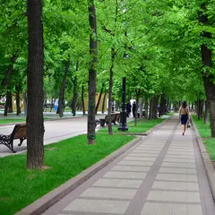
- Гоголевский бульвар · Бульвар · м. Кропоткинская
- 3 минуты пешкомFinch · Кафе
Неспешная прогулка по Гоголевскому бульвару и пара минут до Большого Афанасьевского, где можно засесть за поздний завтрак и десерты.
Открыть план: Бульвар и бранч в переулкеПозвать сюда: Бульвар и бранч в переулке
Фото: Alina Vozna, CC BY-SA 4.0 · Wikimedia Commons
- Гоголевский бульвар · Бульвар · м. Кропоткинская
- 6 минут пешкомANTIПА · Кафе
Неспешно пройтись по Гоголевскому бульвару и через пять минут сесть завтракать в тихом переулке. Спокойное начало выходного дня.
Открыть план: Бульвар и поздний завтракПозвать сюда: Бульвар и поздний завтрак
Фото: Alina Vozna, CC BY-SA 4.0 · Wikimedia Commons
- Гоголевский бульвар · Бульвар · м. Кропоткинская
- 3 минуты пешкомFinch · Кафе
Круг по бульвару под жёлтыми кронами и пара минут до Большого Афанасьевского, где завтраки подают весь день и есть витрина с выпечкой.
Открыть план: Гоголевский бульвар и бранчПозвать сюда: Гоголевский бульвар и бранч
Фото: Alina Vozna, CC BY-SA 4.0 · Wikimedia Commons
- Собор Непорочного Зачатия · Собор · м. Улица 1905 года
- 1 минута пешкомКафедра · Кофейня
Зайти в неоготический собор посмотреть витражи, а потом минута до тихой кофейни по соседству. Красивое место и спокойный разговор без дороги.
Открыть план: Готический собор и пирогПозвать сюда: Готический собор и пирог
Фото: A.Savin, Free Art License · Wikimedia Commons
- Особняк Зинаиды Морозовой · Особняк · м. Баррикадная
- 5 минут пешкомПатриаршие пруды · Пруд и сквер
- 2 минуты пешкомI love cake · Кондитерская
Рассмотреть неоготический особняк, за четыре минуты дойти до Патриарших и сделать круг у воды, а потом вернуться на десерт в кондитерскую рядом.
Открыть план: Замок на Спиридоновке и прудПозвать сюда: Замок на Спиридоновке и пруд
Фото: Vzorets, CC BY-SA 4.0 · Wikimedia Commons
- Парк «Зарядье» · Парк · м. Китай-город
- 10 минут пешкомСофия · Кофейня
Прогулка по парку и парящему мосту, затем десять минут через реку до кофейни с окнами на Кремль. Виды с обоих берегов за одну встречу.
Открыть план: Зарядье и кофе в колокольнеПозвать сюда: Зарядье и кофе в колокольне
Фото: Alina Vozna, CC BY-SA 4.0 · Wikimedia Commons
- Московский зоопарк · Зоопарк · м. Баррикадная
- 11 минут пешкомКафедра · Кофейня
Погулять среди вольеров, пока светло, и за десять минут дойти до кофейни согреться. Простой план без пафоса, где легко найти темы для разговора.
Открыть план: Зоопарк и тёплая кофейняПозвать сюда: Зоопарк и тёплая кофейня
Фото: A.Savin, Free Art License · Wikimedia Commons
- Клуб имени Русакова · Авангард Мельникова · м. Сокольники
- 12 минут пешкомСокольники · Парк
Три бетонных зуба зрительного зала над Стромынкой, а потом прогулка по аллеям Сокольников.
Открыть план: Клуб-шестерёнка Мельникова и СокольникиПозвать сюда: Клуб-шестерёнка Мельникова и Сокольники
Фото: Ludvig14, CC BY-SA 4.0 · Wikimedia Commons
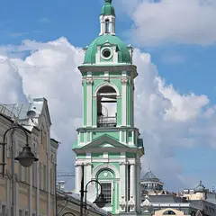
- Перезвон · Кофейня в колокольне · м. Третьяковская
- 9 минут пешкомТретьяковка на Кадашёвской · Музей
Капучино под сводами колокольни XVIII века на Пятницкой, потом выставка в Третьяковке на Кадашёвской набережной.
Открыть план: Кофе в колокольне и КадашиПозвать сюда: Кофе в колокольне и Кадаши
Фото здания: Dmitry Ivanov., CC BY-SA 4.0 · Wikimedia Commons
- Смотровая ЦДМ · Смотровая площадка · м. Кузнецкий Мост
- 3 минуты пешкомГранд Кофемания · Ресторан
Встречаете закат на смотровой над центром, спускаетесь и через три минуты садитесь ужинать. Вид даёт тему для разговора, ресторан — время на него.
Открыть план: Крыша ЦДМ и ужин у ЛубянкиПозвать сюда: Крыша ЦДМ и ужин у Лубянки
Фото: A.Savin, CC BY-SA 3.0 · Wikimedia Commons
- Особняк Арсения Морозова · Неомавританский особняк · м. Арбатская
- 12 минут пешкомОсобняк Рябушинского · Музей
Ракушки и витые колонны особняка Морозова на Воздвиженке, потом каменная лестница-волна Шехтеля в особняке Рябушинского.
Открыть план: Мавританский замок и лестница-волнаПозвать сюда: Мавританский замок и лестница-волна
Фото: Елена Нечипоренко, CC BY-SA 4.0 · Wikimedia Commons
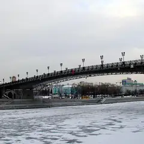
- Патриарший мост · Пешеходный мост · м. Кропоткинская
- 11 минут пешкомANTIПА · Кафе
С моста открывается панорама реки и центра, а в десяти минутах ходьбы ждёт кафе с тёплой выпечкой, где можно согреться после ветра.
Открыть план: Мост с видом и кофе в переулкеПозвать сюда: Мост с видом и кофе в переулке
Фото: NVO, общественное достояние · Wikimedia Commons
- Патриарший мост · Пешеходный мост · м. Кропоткинская
- 4 минуты пешкомКрасный Октябрь · Бывшая фабрика
- 5 минут пешкомChima · Фудхолл
Встретить закат на Патриаршем мосту, пройтись по Красному Октябрю и поужинать в Chima — всё в пяти минутах.
Открыть план: Мост, Красный Октябрь и ChimaПозвать сюда: Мост, Красный Октябрь и Chima
Фото: NVO, общественное достояние · Wikimedia Commons
- Особняк Зинаиды Морозовой · Особняк · м. Баррикадная
- 6 минут пешкомДом-музей Чехова · Музей
- 11 минут пешкомMátes · Кофейня
Два дома с историей в пяти минутах друг от друга: снаружи замок Морозовой, внутри скромный быт писателя. После музея — кофе неподалёку, чтобы обсудить увиденное.
Открыть план: Особняк и дом ЧеховаПозвать сюда: Особняк и дом Чехова
Фото: Vzorets, CC BY-SA 4.0 · Wikimedia Commons
- Тверская улица · Улица · м. Тверская
- 6 минут пешкомАнгликанская церковь Святого Андрея · Концертный зал
- 4 минуты пешкомNiqa · Кондитерская
Сворачиваете с Тверской в переулки, попадаете на дневной концерт в церкви и заканчиваете в кондитерской в четырёх минутах пешком.
Открыть план: Переулки, концерт и десертыПозвать сюда: Переулки, концерт и десерты
Фото: mos.ru, CC BY 4.0 · Wikimedia Commons
- Доходный дом Исакова · Модерн · м. Парк культуры
- 4 минуты пешкомМансуровский переулок · Старый переулок
- 13 минут пешкомДом Бурганова · Музей скульптуры
Волнистый фасад Кекушева, кривой Мансуровский переулок и дворики Бурганова, где бронза стоит среди кирпичных арок.
Открыть план: Пречистенка: волнистый модерн и сад бронзыПозвать сюда: Пречистенка: волнистый модерн и сад бронзы
Фото: Moreorless, CC BY-SA 4.0 · Wikimedia Commons
- Государственный музей Пушкина · Музей · м. Кропоткинская
- 6 минут пешкомFinch · Кафе
Сначала залы музея Пушкина в старой усадьбе, потом пять минут переулками до бистро в доходном доме — сэндвичи и десерт, чтобы обсудить увиденное.
Открыть план: Пушкин на Пречистенке и обедПозвать сюда: Пушкин на Пречистенке и обед
Фото: NVO, CC BY-SA 2.5 · Wikimedia Commons
- Пушкинский музей · Музей · м. Кропоткинская
- 1 минута пешкомANTIПА · Кафе
Пара часов среди картин, а потом минута пешком до светлого кафе с выпечкой: впечатления удобно обсудить сразу, пока они свежие.
Открыть план: Пушкинский и кафе за угломПозвать сюда: Пушкинский и кафе за углом
Фото: Ghirlandajo, CC BY-SA 3.0 · Wikimedia Commons
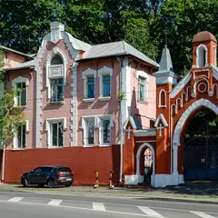
- Введенское кладбище · Некрополь · м. Лефортово
- 20 минут пешкомЛефортовский парк · Парк
Сначала тихие аллеи с готическими надгробиями, затем минут пятнадцать пешком до парка с прудами и плотинами. Долгая прогулка, в которой хватает времени на разговор.
Открыть план: Склепы и старый парк ЛефортоваПозвать сюда: Склепы и старый парк Лефортова
Фото: Никонико962, CC BY-SA 4.0 · Wikimedia Commons
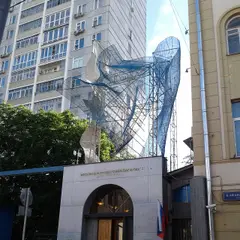
- Дом Бурганова · Музей скульптуры · м. Кропоткинская
- 1 минута пешкомFinch · Кафе
Сначала дворик и залы музея скульптуры, потом минута пешком по тому же переулку до кафе — сырники и сэндвичи, пока обсуждаете увиденное.
Открыть план: Скульптуры Бурганова и поздний завтракПозвать сюда: Скульптуры Бурганова и поздний завтрак
Фото: Apr1, CC BY-SA 4.0 · Wikimedia Commons
- Третьяковка на Кадашёвской · Музей · м. Полянка
- 10 минут пешкомСофия · Кофейня
После выставки в Кадашах семь минут пешком до набережной, где в колокольне варят кофе. Искусство сменяется тихим двором и панорамой.
Открыть план: Третьяковка и вид на КремльПозвать сюда: Третьяковка и вид на Кремль
Фото: Ludvig14, CC BY-SA 4.0 · Wikimedia Commons
- Мультимедиа Арт Музей · Музей фотографии · м. Кропоткинская
- 4 минуты пешкомЦентральный дом учёных · Столовая
Выставка в Мультимедиа Арт Музее, а через пять минут пешком — недорогой обед в историческом особняке на Пречистенке.
Открыть план: Фотографии и обедПозвать сюда: Фотографии и обед
Фото: JukoFF, CC BY-SA 4.0 · Wikimedia Commons


Выходные в календаре
Бесплатные события и наш выбор на выходные — на две недели вперёд. Подпишись один раз, и календарь будет обновляться сам.
Подписаться в календаре: бесплатные события и выходные в МосквеGoogle Календарь: бесплатные события и выходные в Москве (откроется в новой вкладке)Файл .ics: бесплатные события и выходные в Москве
Как позвать
- Выбери план, место или событие — в карточке адрес, цены и маршрут в Яндекс Картах.
- Нажми «Позвать сюда» — соберётся приглашение-игра для свидания или голосование для компании.
- Отправь ссылку в любой мессенджер: тебе ответят, а компания отметит, куда и когда может. Бесплатно и без регистрации.